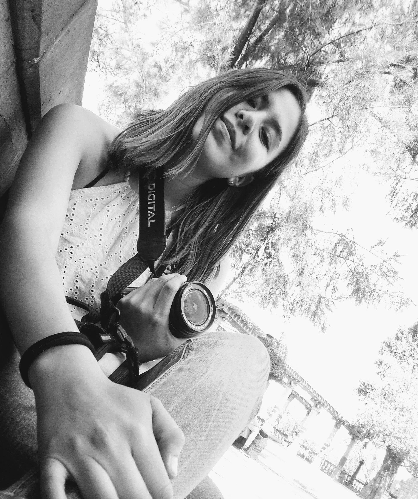

Bianca Méndez Hernández
Soy estudiante de la carrera de licenciatura de Diseño Gráfico en la Benemérita Universidad Autónoma de Puebla, actualmente me encuentro cursando el séptimo semestre, decidí tomar Diseño Industrial en mis optativas pues anteriormente concluí una carrera técnica en Ingeniería industrial y una especialidad en el área de plásticos, por lo cual me gustaría reunir los conocimientos de ambas carreras para dedicarme al área de embalaje y diseño de empaques. La fotografía siempre me ha sido una de mis actividades favoritas y cuando tomé las materias de fotografía en la universidad sentí un interés aún mayor por lo que decidí comprar una cámara profesional y con esta practicar capturando momentos en cualquier lugar a los que iba. Mis fotografías en general son de paisajes, naturaleza y arquitectura, pero mis favoritas son de atardeceres.
